HAMR supports working with HAMR SysMLv2 models in a customization of VSCodium (with the SysIDE extension for SysMLv2) called “CodeIVE” (IVE = Integrated Verification Environment). This documentation covers some of the key aspects of using CodeIVE for HAMR SysMLv2-based development. (TBD: Other HAMR documentation provides a brief overview of using SysMLv2 with HAMR. This documentation section focuses on the use of the CodeIVE editor)
There are other SysMLv2 editors available such as the open source Eclipse-based “pilot implementation” provided as a reference implementation by members of the OMG SysMLv2 Working Group. However, the HAMR team and Collins INSPECTA project have chosen to emphasize the SysIDE editor due to its relatively good performance (currently, it performs much better than the pilot implementation), free availability, and because other INSPECTA tools (such as the Rust Verus verifier) have VSCode plug-ins. As the INSPECTA project progresses, we may develop HAMR SysMLv2 front-ends in commerical modeling tools such as Cameo.
Project Structure
As discussed in (TBD: Other documentation), the typical folder structure for a HAMR SysMLv2-based project is shown below.
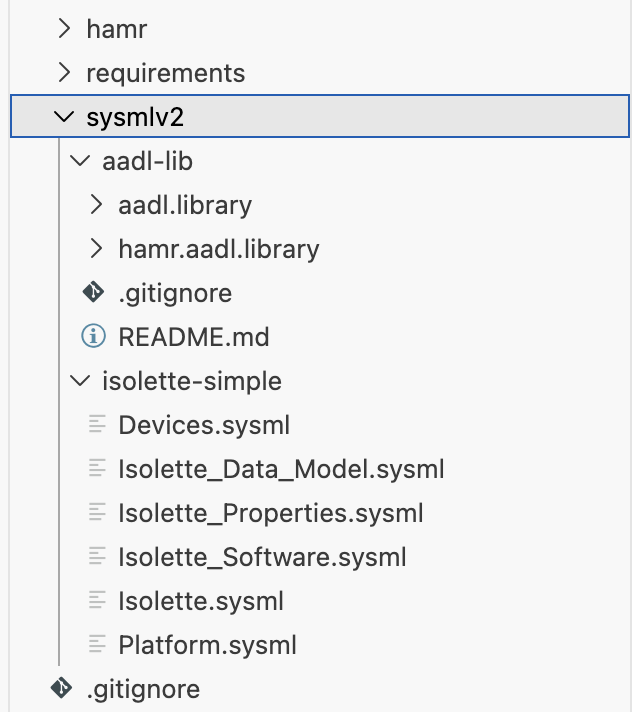
hamrincludes HAMR-generated code and executables resulting from the project buildsysmlv2includes SysMLv2 models specifying the system architecture- optional folders such as
requirementsmay hold other development artifacts
The intent is that the sysmlv2 folder be opened as the root VSCodium workspace folder as shown in the screen shots below.
Selecting the File / Open Folder…
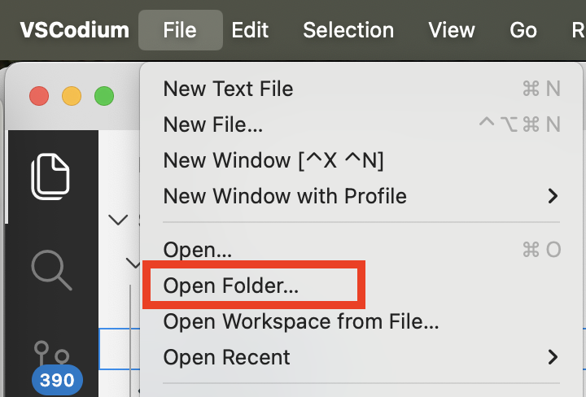
..then selecting the sysmlv2 folder.
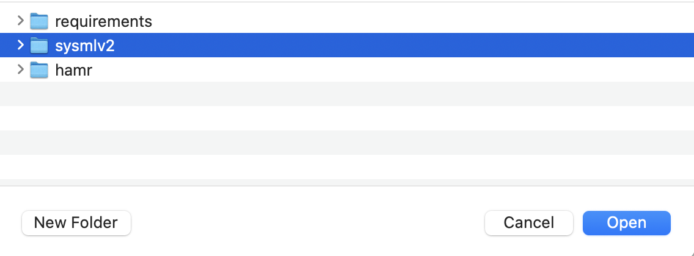
The screen shot below shows an example HAMR SysMLv2 project opened in CodeIVE with a typical perspective/view arrangement of panes.
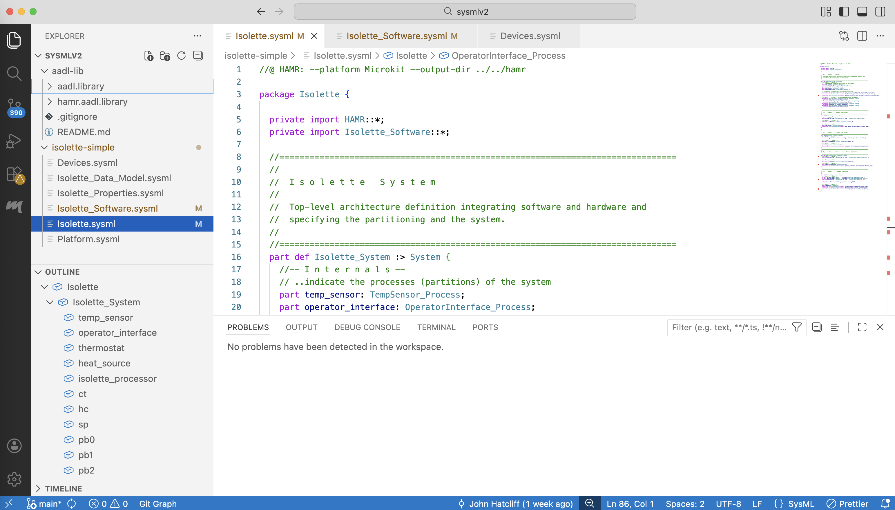
During model development, one will typically have file Explorer, Outline, and Problems panes open. The Outline pane will help you quickly navigate to specific model elements. The Problems pane will report syntax errors and HAMR Type Checking errors.
SysMLv2 AADL and HAMR Libraries
SysMLv2 AADL and HAMR Libraries must be present in the VSCodium project for editing HAMR SysMLv2 projects, as can be seen in aadl-lib folder in the above screen shot. These files contain definitions you will associate with features of your models (using SysMLv2 inheritance) to turn vanilla SysMLv2 models into models that can be processed by HAMR. In essence, the libraries contain specific embedded system building blocks that HAMR supports for its analyses and code generation. An overview of these libraries is provided in a (TBD: separate documentation chapter).
(TBD: The method for obtaining these libraries has not been standardized yet, due to ongoing work within the OMG RTESC Working Group. For now, you should just copy these files from an existing project.)
A screenshot below shows some of the library file structure.
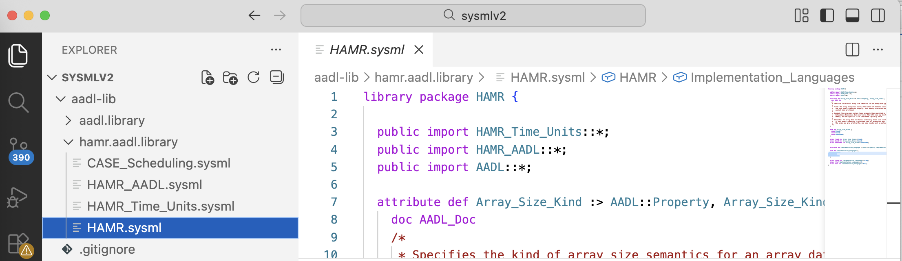
The libraries are arranged so that HAMR.sysml (opened in the screenshot above) is the “root” library file. It importants all the other required library files, so your application model files only need to import HAMR.sysml to include all the appropriate library definitions.
The CodeIVE HAMR Type Checking function discussed in subsequent sections helps check that you have used these definitions correctly.
General SysMLv2 Editing Support Provided by the SysIDE VSCode Extension
CodeIVE utilizes a open-source version of the SysIDE SysMLv2 VS Extension from Sysmetry. SysIDE provides the usual syntax highlighting, outline view, syntax checking, and name resolution as one would expect from a language editor.
SysIDE finds SysMLv2 errors as you type and reports them in the Problems pane.
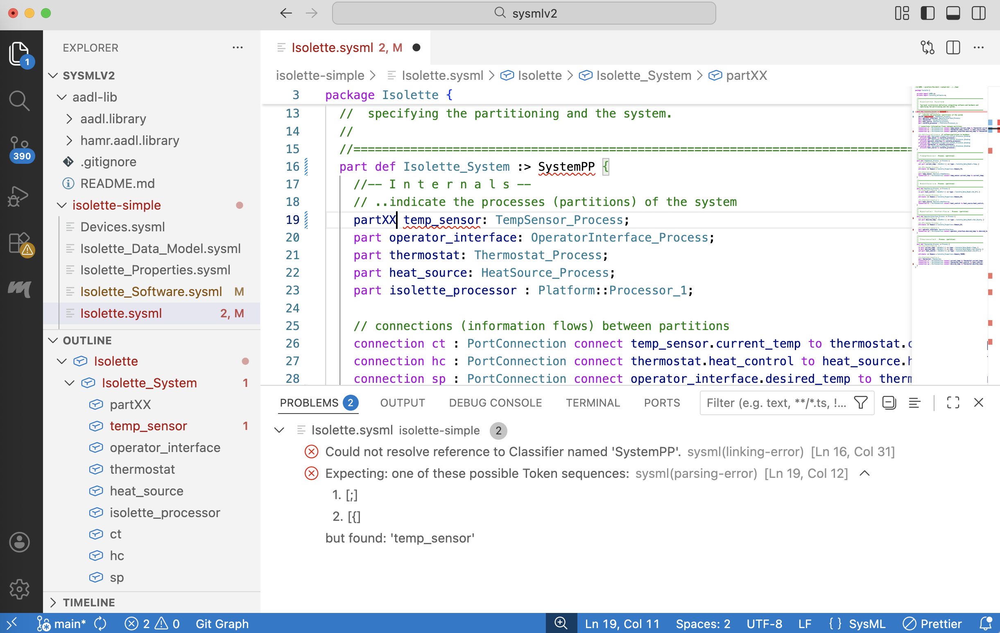
For example, in the screen shot above, SysIDE reports name resolution error associated with SystemPP. In this case, the part definition is attempting to inherit from the System AADL component in the HAMR AADL libraries, but the extra PP creates a name that cannot be found anywhere in current scope.
The second error detected is a more mundane syntax error associated with the XX in the keyword parts.
You can click on the listed problem entry in the Problems view and the editor will take you to the location of the syntax error.
As you type and correct errors, SysIDE will recheck the file and remove the associated problem report automatically. If for some reason the problem report is not cleared when you think it should be cleared, you might try saving the file(s) to give a “cleaner” file state to the extension.
There are a few caveats: the SysMLv2 language and its well-formedness rules are still evolving. So some SysMLv2 models that are error-free in one SysMLv2 editor (such as the official Pilot Implementation) may have errors reported in other SysMLv2 editors.
The most important caveat to understand is that the SysIDE editor does not check AADL and HAMR-specific well-formedness rules. Practically speaking, you may have models that are reported as “error free” by SysIDE while still having issues in the use of the HAMR AADL libraries or HAMR formal methods specifications like the GUMBO behavior contracts. These errors must be removed before HAMR analyses and code generation can be performed. Checking for these error is handled by a separate manually-launched HAMR Type Checking VSCode command, as described below.
Checking the Well-formedness of Models with HAMR Type Checking
As noted above, the SysIDE VSCode extension will not find errors associated with misuse of the HAMR AADL libraries, mistakes in HAMR formal methods specifications, or certain forms of HAMR data type errors.
The HAMR Type Checking function provides checking for these types of errors. However, HAMR Type Checking is not performed actively as you type. Instead, it needs to be manually launched via the general purpose VSCode command palette. You will typically want to run HAMR Type Checking frequently as you finish new sections of your model.
You can access the command palette from the View menu as shown in the screen shot below (or you can use the keyboard short cut indicated in the menu).
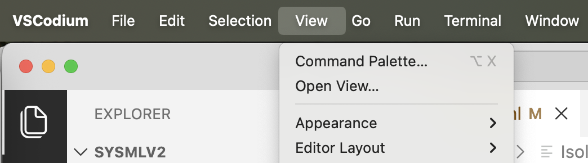
Once the command palette list appears, start typing “HAMR” to filter out the HAMR-related commands from the list (typically typing only the first few characters, e.g., “H” or “HA” is sufficient).
Choose the “HAMR Type Checking” from the list, and the type checking will begin to execute behind the scenes. Note that the Type Checking function will automatically save your files when it runs.
The VSCode Status Bar at the bottom of the editor will display a “tools symbol” to indicate any active tool (see the screen shot below). So you can rely on this to tell you when the type checking function is currently active.
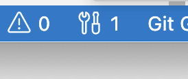
.In the same area on the status bar, the total number of current problems is also shown, and you can click on the Problems symbol in the Status Bar to open the Problems View.
Once you fix your errors, you need to manually re-run the Type Checking to clear the associated problem marker (in VSCode there is a keyboard short cut available to run the most recently launched command).
The screen shot below shows the reporting of error (a name resolution error) the use of the HAMR Gumbo Contracts specification language.
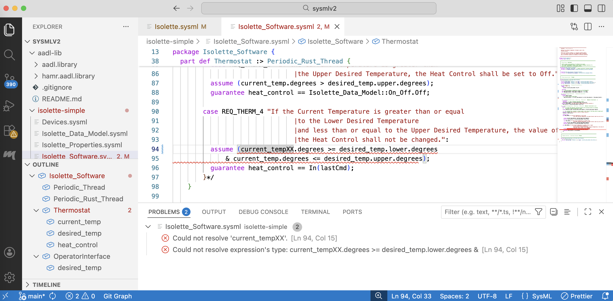
.See the (TBD: HAMR Type Checking Reference Documentation) for details about all the forms of checks that the function performs.
HAMR Code Generation from CodeIVE
HAMR’s code generation can be configured in a variety of ways, including choosing the target platform, choosing options for the selected platform, choosing directories to hold the results of code generation, etc. All of these options are exposed in the CLI interface for HAMR. However, typical developer workflows will launch code generation from in CodeIVE using the the “HAMR SysML CodeGen” command available from the command palette. For AADL, HAMR code generation is also available via HAMR plug-ins to the OSATE IDE.
Using Existing Configuration Options
The command palette “HAMR SysML CodeGen” command will look for existing configuration information embedded in a special comment format in your model files.
For example, in the Simple Isolette the Isolette.sysml file includes the following configuration information in a comment in the first line.
//@ HAMR: --platform Microkit --output-dir ../../hamr
We refer to these as code generation “configuration specifications”. When code generation is run, it uses this information to configure the code generation options. In particular, from the comment, we can see that this is a configuration indicating that code generation should produce code for the seL4 Microkit platform, and that the resulting code should go in the hamr folder indicated by the given relative path. Within the given output-dir folder, by default, HAMR places code in a subfolder with a name associated with the target platform. So for the example above, generate code will go in the ../../hamr/microkit folder. (TBD: for more discussion about HAMR project structure, see XXXX).
When you are getting started with HAMR and working from provided examples or when you pick up existing HAMR projects, code generation options will often already be configured (and represented in the root file of the model using the comment syntax above) to align with folder structure and code generation strategy of the existing project.
Choosing the “HAMR SysML CodeGen” command from the command palette, brings up a pull-down menu that will allow you to chose the target platform for code generation. The screen image below shows the seL4 Microkit platform being selected.
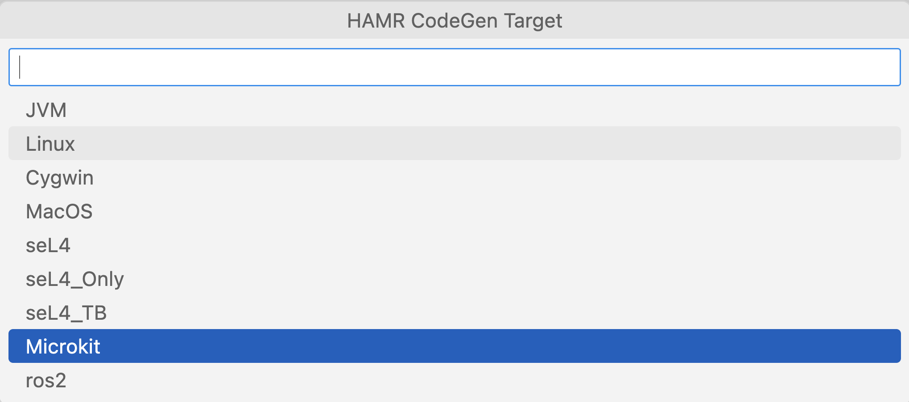
HAMR will then scan the configuration specifications in the file with a selected system component in it and find the first one in which the platform option matches the target platform selected in CodeGen command window. It will then perform code generation using the options in that configuration specification.
(TBD: see the section below for a discussion of the diagnostic information that HAMR generates when code generation runs)
Adding Existing Code Generation Configuration Specifications
While it is possible to edit the SysML model file to create the configuration specification manually, HAMR provides a menu-based tool for creating the specifications. Using the menu-based tool is the recommended approach since it will reduce the likelihood of errors in the specification.
The tool, implemented as a simple Java program, can be launched from the command palette using the “HAMR SysML CodeGen Configurator” command. The screen image below shows that once the tool is launched, the first step is to select the target platform.
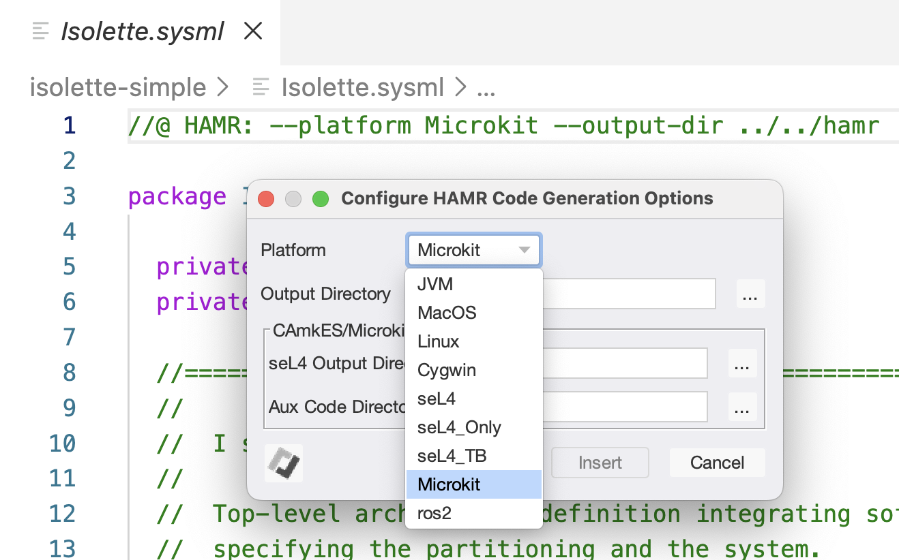
Once the platform is selected, options specific to that platform will appear, as shown in the screen image below.
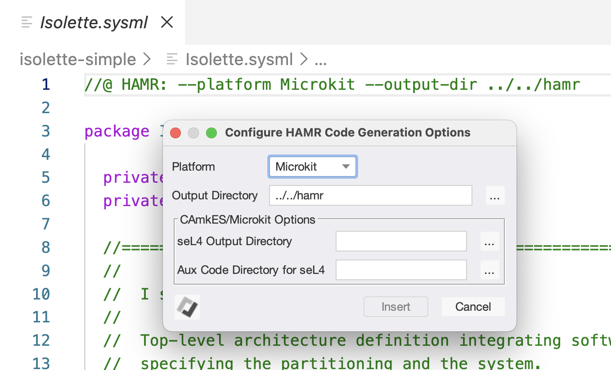
In this case, the Microkit options include specifying various directories for code generation output. Clicking on the ... buttons to the right of each directory option opens the OS folder navigator to enable you to navigate to and select the desired folder.
Here is a summary of the options for the Microkit platform:
- “Output Directory”: This is the top-level folder than HAMR will use for code generation output. The convention is to use a folder named “hamr” at the same level as a folder holding your models (e.g., “sysmlv2”). (TBD: for more discussion about HAMR project structure, see XXXX). Output for multiple target platforms can be placed in the
hamrfolder using subfolders. For example, the default subfolder name used for seL4 Microkit ismicrokit. This default can be overridden using the option below. - “seL4 Output Directory”: This field is optional. If set, it will override the default
hamrplatform subfolder name. (Jason: does this have to be within thehamrfolder?). - “Aux Code Directory for seL4”: This field is optional. (Jason: What is this for?)
As a practical suggestion, when starting out with a new HAMR for which you need to specify code generation options, just use the recommended ../../hamr folder for the Output Directory and let the other options take their default values.
For details of code generation options for other platforms, you can do a “prompting call” of HAMR code generation from the command line (the equivalent of an invocation with --help), or (TBD: consult the reference documentation, see XXXX).
sireum hamr codegen